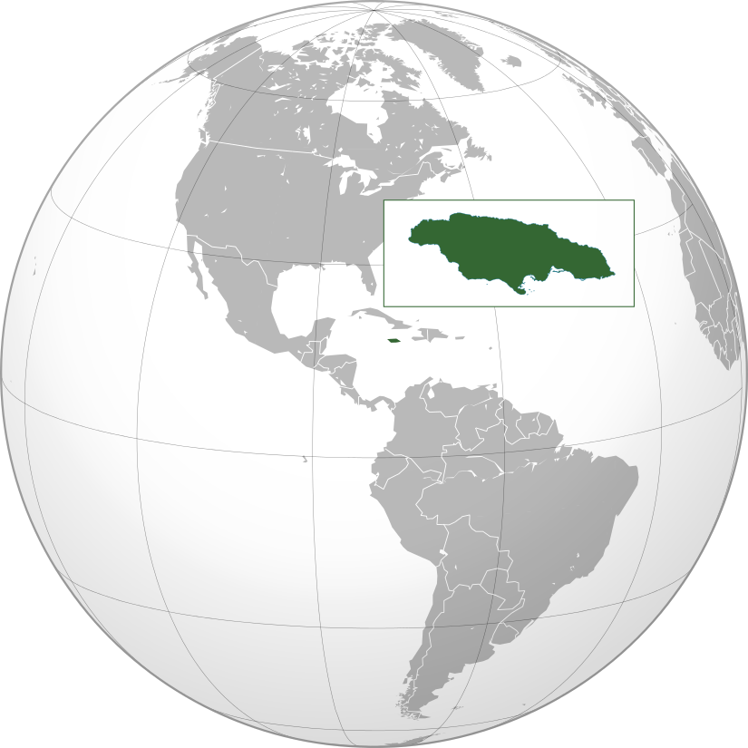

| Continent | Flag | Country | Capitals | Location | Photo | Temperature°C |
|---|---|---|---|---|---|---|
| Asia | Israel | Jerusalem |  |
 |
13°C | |
| Asia | Cyprus | Nicosia |  |
14°C | ||
| Africa | Sudan | Khartoum |  |
24°C | ||
| Africa | Gambia | Banjul | 34°C | |||
| Europe | Belgium | Brussels |  |
25°C | ||
| Europe | Andorra | Andorra la Vella | 11°C | |||
| North America | Mexico | Mexico City |  |
15°C | ||
| North America | Jamaica | Kingston |  |  |
28°C |